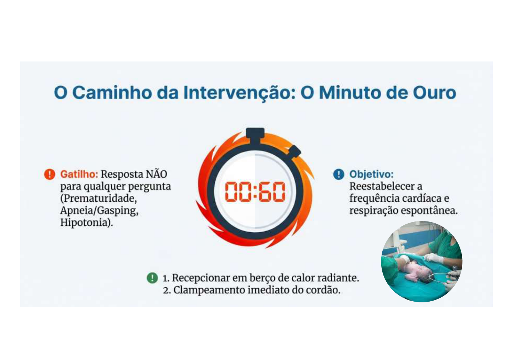
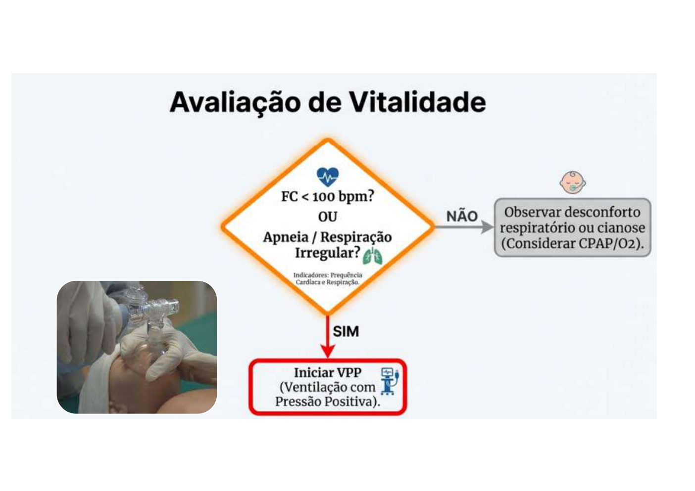
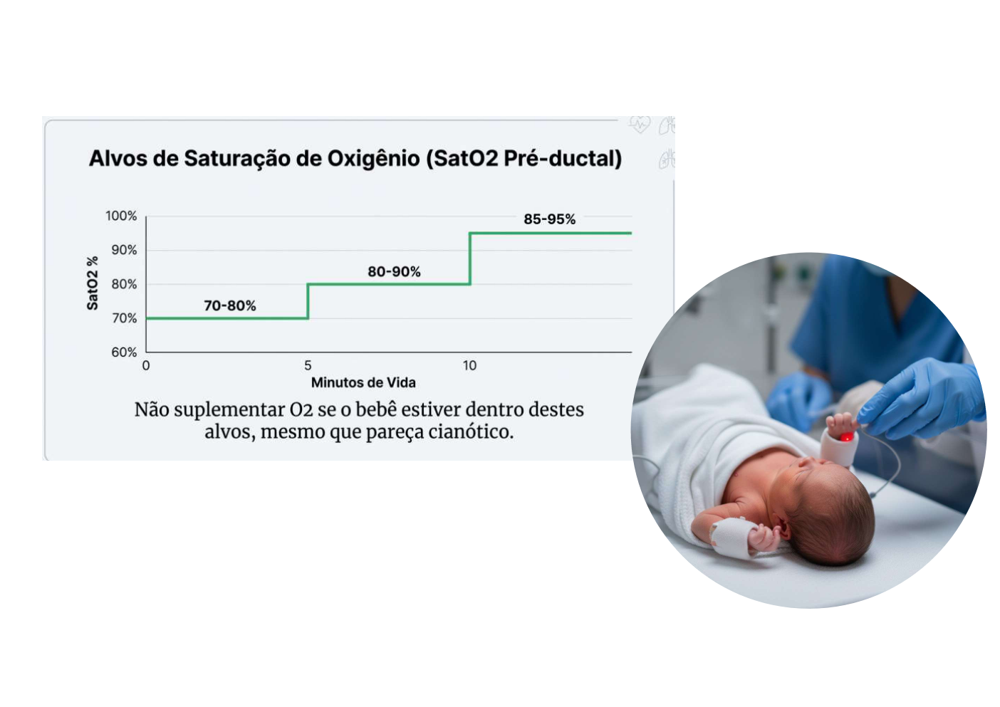
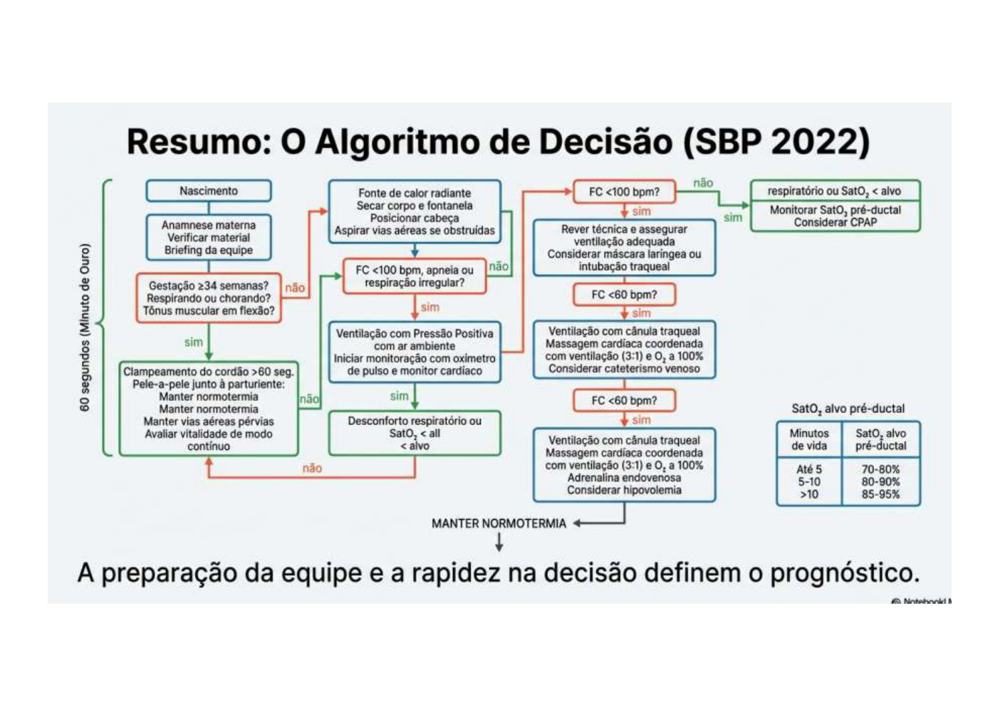

Reanimação Neonatal
Fluxograma de Decisão — ≥ 34 Semanas



``` NASCIMENTO ↓ [ A termo? Respirando/chorando? Tônus em flexão? ] ↓ NÃO a qualquer um MESA DE REANIMAÇÃO ↓ PASSOS INICIAIS (em ≤ 30 seg):
- Promover calor (sala 23-26°C, campos aquecidos, calor radiante)
- Secar e estimular (corpo e cabeça) → desprezar campos úmidos → touca
- Posicionar cabeça em leve extensão (permeabilidade das vias aéreas)
- Aspirar boca e narinas SE excesso de secreções (sonda traqueal, pressão máx 100 mmHg)
↓ AVALIAR FC E RESPIRAÇÃO ↓ FC > 100 bpm + respiração regular → Cuidados de rotina FC < 100 bpm OU apneia/respiração irregular ↓ VPP (Ventilação com Pressão Positiva) — INICIAR no "MINUTO DE OURO" ↓ (30 segundos de VPP) AVALIAR FC E RESPIRAÇÃO ↓ FC > 100 + respiração regular → Suspender VPP, monitorar FC 60–100 sem melhora → Verificar técnica da VPP (CORRIGIR antes de O₂) FC < 60 após VPP adequada (com O₂ 60–100%) ↓ MASSAGEM CARDÍACA + VPP (relação 3:1) ↓ (60 segundos) AVALIAR FC ↓ FC < 60 → ADRENALINA EV (ou traqueal) + continuar massagem ```
Checklist — VPP (Ventilação com Pressão Positiva)



0/9 marcados
VPP com Falha — CHECAR ANTES DE OFERECER O₂:
0/5 marcados
Se após correção da técnica não houver melhora → considerar máscara laríngea ou intubação orotraqueal
Checklist — Massagem Cardíaca
0/6 marcados
Checklist — Adrenalina
0/6 marcados
Saturação Alvo por Minuto de Vida (pré-ductal, membro superior direito)
| Tempo | SatO₂ Alvo |
|---|---|
| 1 min | 60–65% |
| 2 min | 65–70% |
| 3 min | 70–75% |
| 4 min | 75–80% |
| 5 min | 80–85% |
| 10 min | 85–95% |
ESTAÇÃO OSCE — Simulação
[PROFESSOR]: RN de 38 semanas, parto cesáreo, ao nascimento não chora, tônus flácido, FC 80 bpm. Líquido amniótico claro.
Pergunta 1: Qual a primeira conduta?
Levar imediatamente para a mesa de reanimação e iniciar os passos iniciais: promover calor, secar/estimular, posicionar a cabeça, aspirar se necessário — em no máximo 30 segundos.
Pergunta 2: Após os passos iniciais, FC 90 bpm, respiração irregular. O que fazer?
Iniciar VPP com máscara, frequência 40–60 mov/min, pressão ~25 cmH₂O, ar ambiente, com oxímetro no membro superior direito. VPP deve ser iniciada ainda no "minuto de ouro". Avaliar após 30 segundos.
Pergunta 3: Após 30 seg de VPP com técnica correta, FC 50 bpm. Qual a próxima etapa?
Iniciar massagem cardíaca. Dois polegares no terço inferior do esterno, relação 3:1 com VPP, total de 120 eventos/min. O₂ em 100%. Reavaliar FC após 60 segundos.
Pergunta 4: Após 60 seg de massagem, FC ainda 45 bpm. O que fazer?
Adrenalina 1:10.000 — via traqueal 0,1 mg/kg OU via EV (catéter umbilical) 0,01–0,03 mg/kg. Continuar massagem e VPP. Repetir adrenalina a cada 3–5 min se necessário.
Diferenças para RN ≤ 34 Semanas (Pré-Termo)
- Temperatura da sala: 26 °C; receptor de plástico transparente para evitar perda de calor
- Intubação precoce e surfactante endotraqueal se indicado
- Glicose: risco de hipoglicemia — monitorar
- CPAP nasal precocemente para prematuros que respiram (evita atelectasia)
- RAL (raltegravir) contraindicado se IG <37 semanas
Pontos que o Professor Vai Checar
0/6 marcados
Alertas OSCE ⚠️
- Minuto de ouro: VPP deve começar antes de 1 minuto de vida
- NÃO aspirar de rotina RN com mecônio e boa vitalidade (retirou-se a aspiração rotineira)
- Massagem só começa com FC <60 após VPP CORRETA — verificar técnica primeiro
- Relação massagem:ventilação no RN é 3:1 (diferente do adulto 30:2)
- O₂ suplementar só após falha de VPP em ar ambiente — não iniciar O₂ diretamente
Fonte
- Gerado a partir de:
conteudo_cuidados_com_o_rn.md(Aulas 01 Teórica + Prática — Reanimação Neonatal) - Seções consultadas: fluxograma de reanimação, VPP, massagem cardíaca, adrenalina, saturação alvo
- Gaps identificados: protocolo para <34 semanas não detalhado no material — complementado com conhecimento geral (SBP/ILCOR 2021)